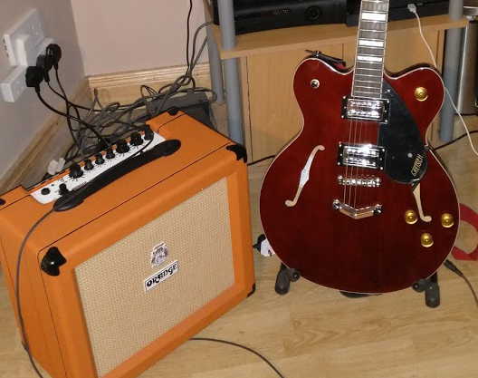
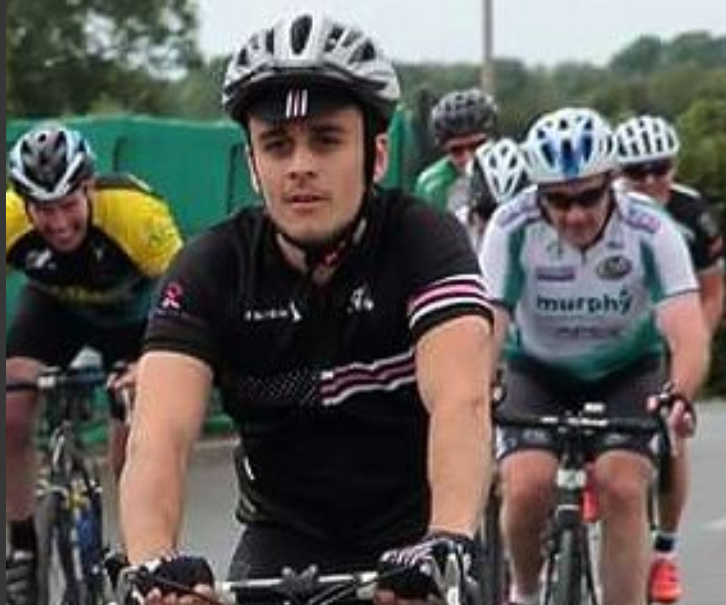
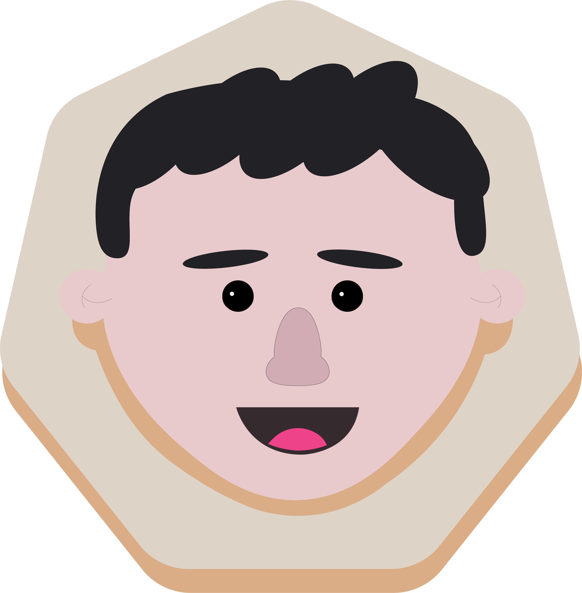
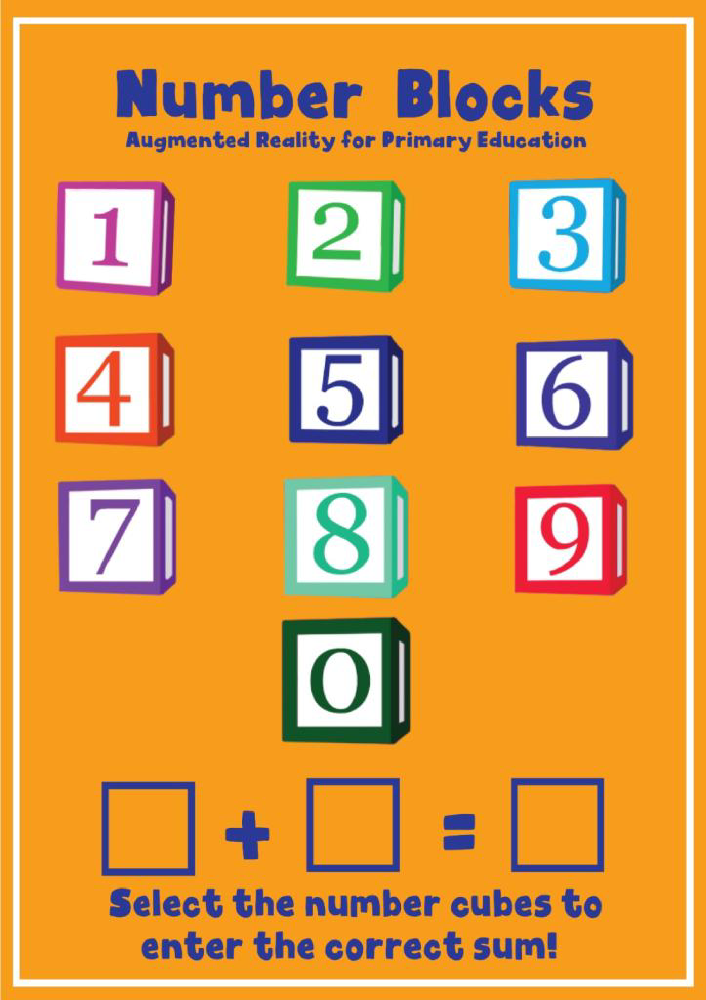

The Music Lover
I love music! I could also say I breath air and eat food, because doesn't everyone ? That being said, I also have played guitar for about 10 years, and dabble in a few other instruments such as keyboard and harmonica.
Read moreThe Avid Reader
I have always been a big reader. Growing up I read all 13 books in the Series of Unfortunate Events. I also read a lot of Anthony Horrowitz, including the Alex Rider, Diamond Brothers and Power of 5 books.
Read moreThe Football Fan
Growing up I always enjoyed sport. While I'm a fan of GAA, Tennis and Rugby, it is english football (or "soccer", bleh) that has always interested me most.
Read more
The Cyclist
Growing up in the Irish countryside, I can't remember a time I didn't enjoy cycling. From that enjoyment, cycling has become an important aspect of my life, allowing me to challenge myslef physically and raise money for some great causes.
Read morefaustina-music.com
I built and hosted this website for Faustina O'Sullivan. She needed a website so that she could showcase her skills as a musician and teacher.
Read more
alancoleman.com
I originally built this website as a way to showcase my previous projects and experience convienently. I also wanted to use it as a chance to refresh my javascript, responsive html, and css skills.
Read more
They came from Upper Space!
A game developed in Unity to demonstrate an understanding of Game Programming. C# skills and procedural generation were key in this project.
Read moreSeanchaí
This video game was created as my final project, as part of a Master's in Creative Digital Media & UX, at Technological University Dublin.
Read more
Learning Blocks
Learning Blocks is a project created to demonstrate knowledge of Augmented Reality applications, using Unity Game Engine and Vuforia.
Read more
BoneStorm
A game developed in Unity to demonstrate an understanding of Game Systems.
Read more